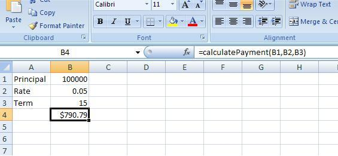

and new (OOXML - Office Open XML) formats.")

ExcelAnt - Ant Tasks for Validating Excel Spreadsheets
ExcelAnt - Ant Tasks for Validating Excel Spreadsheets
Introduction
ExcelAnt is a set of Ant tasks that make it possible to verify or test a workbook without having to write Java code. Of course, the tasks themselves are written in Java, but to use this framework you only need to know a little bit about Ant.
This document covers the basic usage and set up of ExcelAnt.
This document will assume basic familiarity with Ant and Ant build files.
Setup
To start with ExcelAnt, you'll need to have the POI 3.8 or higher jar files. If you test only .xls workbooks then you need to have the following jars in your path:
- poi-excelant-$version-YYYYDDMM.jar
- poi-$version-YYYYDDMM.jar
- poi-ooxml-$version-YYYYDDMM.jar
If you evaluate .xlsx workbooks then you need to add these:
- poi-ooxml-lite-$version-YYYYDDMM.jar
- xmlbeans.jar
For example, if you have these jars in a lib/ dir in your project, your build.xml might look like this:
Next, you'll need to define the Ant tasks. There are several ways to use ExcelAnt:
- The traditional way:
Where excelant.path refers to the classpath with POI jars. Using this approach the provided extensions will live in the default namespace. Note that the default task/typenames (evaluate, test) may be too generic and should either be explicitly overridden or used with a namespace.
- Similar, but assigning a namespace URI:
A Simple Example
The simplest example of using Excel is the ability to validate that POI is giving you back the value you expect it to. Does this mean that POI is inaccurate? Hardly. There are cases where POI is unable to evaluate cells for a variety of reasons. If you need to write code to integrate a worksheet into an app, you may want to know that it's going to work before you actually try to write that code. ExcelAnt helps with that.
Consider the mortgage-calculation.xls file found in the Examples (link broken / file is missing). This sheet is shown below:

This sheet calculates the principal and interest payment for a mortgage based on the amount of the loan, term and rate. To write a simple ExcelAnt test you need to tell ExcelAnt about the file like this:
This code sets up ExcelAnt to access the file defined in the ant property xls.file. Then it creates a 'test' named 'checkValue'. Finally it tries to evaluate the B4 on the sheet named 'MortgageCalculator'. There are some assumptions here that are worth explaining. For starters, ExcelAnt is focused on the testing numerically oriented sheets. The <evaluate> task is actually evaluating the cell as a formula using a FormulaEvaluator instance from POI. Therefore it will fail if you point it to a cell that doesn't contain a formula or a test a plain old number.
Having said all that, here is what the output looks like:
Setting Values into a Cell
So now we know that at a minimum POI can use our sheet to calculate the existing value. This is an important point: in many cases sheets have dependencies, i.e., cells they reference. As is often the case, these cells may have dependencies, which may have dependencies, etc. The point is that sometimes a dependent cell may get adjusted by a macro or a function and it may be that POI doesn't have the capabilities to do the same thing. This test verifies that we can rely on POI to retrieve the default value, based on the stored values of the sheet. Now we want to know if we can manipulate those dependencies and verify the output.
To verify that we can manipulate cell values, we need a way in ExcelAnt to set a value. This is provided by the following task types:
- setDouble() - sets the specified cell as a double.
- setFormula() - sets the specified cell as a formula.
- setString() = sets the specified cell as a String.
For the purposes of this example we'll use the <setDouble> task. Let's start with a $240,000, 30 year loan at 11% (let's pretend it's like 1984). Here is how we will set that up:
Don't forget that we're verifying the behavior so you need to put all this into the sheet. That is how I got the result of $2,285 and change. So save your changes and run it; you should get the following:
Getting More Details
This is great, it's working! However, suppose you want to see a little more detail. The ExcelAnt tasks leverage the Ant logging so you can add the -verbose and -debug flags to the Ant command line to get more detail. Try adding -verbose. Here is what you should see:
We see a little more detail. Notice that we see that there is a setting for global precision. Up until now we've been setting the precision on each evaluate that we call. This is obviously useful but it gets cumbersome. It would be better if there were a way that we could specify a global precision - and there is. There is a <precision> tag that you can specify as a child of the <excelant> tag. Let's go back to our original task we set up earlier and modify it:
In this example we have set the global precision to 1.0e-3. This means that in the absence of something more stringent, all tests in the task will use the global precision. We can still override this by specifying the precision attribute of all of our <evaluate> task. Let's first run this task with the global precision and the -verbose flag:
As the output clearly shows, the test itself has no precision but there is the global precision. Additionally, it tells us we're going to use that more stringent global value. Now suppose that for this test we want to use a more stringent precision, say 1.0e-4. We can do that by adding the precision attribute back to the <evaluate> task:
Now when you re-run this test with the verbose flag you will see that your test ran and passed with the higher precision:
Leveraging User Defined Functions
POI has an excellent feature (besides ExcelAnt) called User Defined Functions, that allows you to write Java code that will be used in place of custom VB code or macros is a spreadsheet. If you have read the documentation and written your own FreeRefFunction implmentations, ExcelAnt can make use of this code. For each <excelant> task you define you can nest a <udf> tag which allows you to specify the function alias and the class name.
Consider the previous example of the mortgage calculator. What if, instead of being a formula in a cell, it was a function defined in a VB macro? As luck would have it, we already have an example of this in the examples from the User Defined Functions example, so let's use that. In the example spreadsheet there is a tab for MortgageCalculatorFunction, which will use. If you look in cell B4, you see that rather than a messy cell based formula, there is only the function call. Let's not get bogged down in the function/Java implementation, as these are covered in the User Defined Function documentation. Let's just add a new target and test to our existing build file:
So if you look at this carefully it looks the same as the previous examples. We still use the global precision, we're still setting values, and we still want to evaluate a cell. The only real differences are the sheet name and the addition of the function.
by Jon Svede, Brian Bush